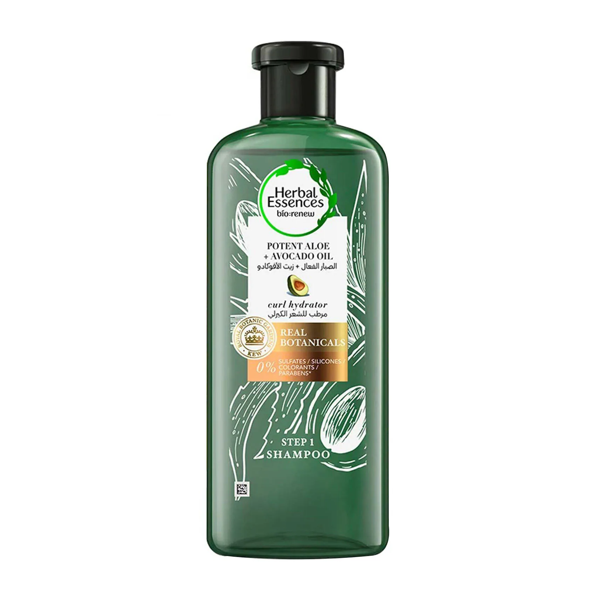

Herbal Essences Sulfate-Free Potent Aloe + Avocado Oil Hair Conditioner
HYDRATE & MOISTURIZE CURLS: Potent Aloe + Avocado Oil is formulated to hydrate & moisturize your natural curls and provide them with nutrients from real plant-based ingredients. RICH & POTENT ALOE VERA 0% HARSH CHEMICALS: To give your curls tender love and care whilst delivering the best results, this product is free of sulfates, colorants, and parabens (except for carried over additives). THE SCENT EXPERIENCE: Revel in refreshing water flower fragrance underlined with tingly citrus notes, cedarwood, and tonka bean. Bathe your senses with earthy tones and feel the power of nature.
L'Oréal Paris Extraordinary Oil Nourishing Shampoo for Normal to Dry Hair
Transform your lifeless hair to soft and lustrous . This nourishing shampoo cleanses away build-ups without stripping your scalp. Also, it soothes and nourishes each strand for a silky smooth finish. The L'Oréal Paris Extraordinary Oil Nourishing Shampoo offers deep hydration right from the scalp to gives long- lasting relief from dandruff. In addition, it replenishes nourishment and elasticity for defined and lustrous strands. Sulfate-free Formulation for Safe Use The L'Oréal Paris Extraordinary Oil Nourishing Shampoo consists of no foam or sulfates for safe use on your hair. Its intense hydrating formula with the blend of six flower extracts helps in eliminating dryness from your hair. Perfect for Dry and Lifeless Hair